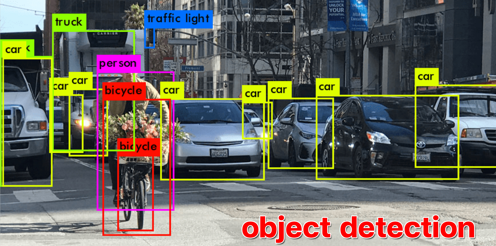
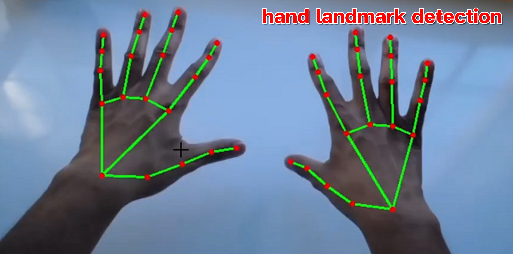
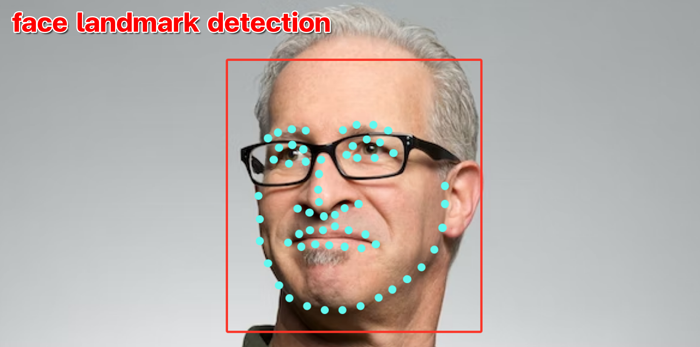
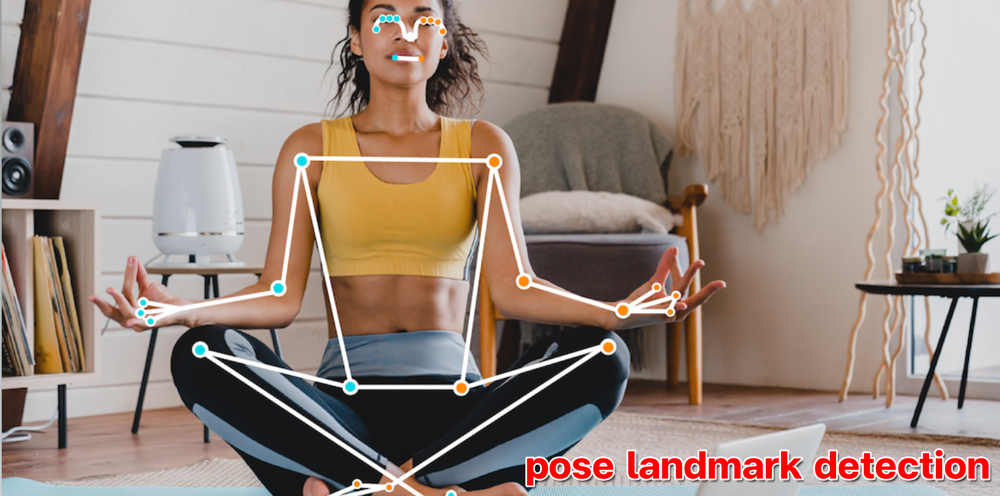
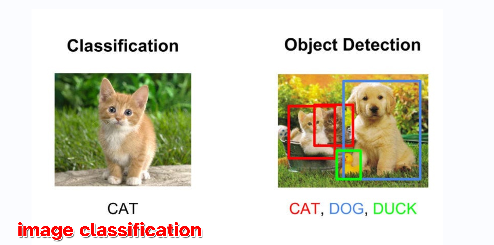

Detection Options
Menu
Object Detection
Hand Landmark Detection
Face Landmark Detection
Pose Landmark Detection
Image Classification
ติดต่อเรา
Detection Options





Object Detection
Hand Landmark Detection
Face Landmark Detection
Pose Landmark Detection
Image Classification